1. Background, Existing Paper & Synchronized Cohort
In June 2025, Paulo et al. at the University of Coimbra published the Move4AS dataset in Scientific Data, recording synchronized neurophysiological and kinematic streams during gross-motor imitation (dancing and walking across three expressive movement styles).
Title: "A Multimodal Dataset Addressing Motor Function in Autism"
Authors: J. R. Paulo, T. Sousa, J. Perdiz, L. Pereira, M. Vasen, S. Mouga, G. Pires, and M. Castelo-Branco.
Citation: Scientific Data, vol. 12, art. 959, Jun. 2025. DOI: 10.1038/s41597-025-05313-0 · Figshare ID: 28296518.
Limitations of the Original Study
- Unimodal EEG-Only Classification: Their technical validation evaluated only a linear
CSP + LDAclassifier on scalp EEG (reporting 71.4% on dance and 78.0% on walk), discarding both 3D MoCap and Head IMU from classification. - Passive Observation Only: Classification was evaluated exclusively during the 3-second motionless video observation window (Phase 2), never during active motor execution (Phase 4).
- Pooled Epoch Splitting: Using a random 80%/20% pooled epoch split allowed trials from the same participant in both train and test splits, overestimating out-of-subject generalization.
Our 33-Participant Synchronized Cohort (multimodal_phase2_phase4_dataset.pt)
- Participants & Trials: 33 adults (19 Control:
S1, S3–S20; 14 ASD:P1–P14;S2excluded due to missing MoCap files), yielding 989 synchronized trials (570 Control [57.6%], 419 ASD [42.4%]). - Scalp EEG (
(989, 14, 1000)): 14 common electrodes at 250 Hz, 4th-order zero-phase Butterworth bandpass filtered (0.5–45.0 Hz) and z-score standardized per channel per trial. - Head IMU (
(989, 3, 1000)): 3-axis head linear accelerometry (ax, ay, az) at 250 Hz, axis-standardized per trial. - 3D MoCap (
(989, 280, 3, 21)): 21 anatomical joints resampled to 70 Hz (280 frames over 4.0 s), pelvis-centered (Hipat origin) and rescaled to cohort-mean bone lengths to eliminate body-size leakage.
2. Dual-Phase Benchmark: Phase 2 (Observation) vs. Phase 4 (Execution)
Every Move4AS trial follows a hardware-triggered timeline: Phase 2 (Trigger 2, 3.0 s, 750 samples) captures motionless passive video observation with relatively clean scalp EEG, whereas Phase 4 (Trigger 4, 4.0 s, 1,000 samples / 280 MoCap frames) captures active whole-body imitation where vigorous neck and scalp muscle movement introduces severe electromyographic (EMG) and electrode artifacts into EEG while making 3D skeletal kinematics highly informative.
To quantify this discrepancy under strict 5-fold subject-independent cross-validation (benchmark_phase2_vs_phase4.py, 40 epochs/fold), we evaluated 8 single-task configurations across both phases:
| Config # | Task Phase & Duration | Modality & Model | Target A Acc (± Std) | Macro F1 | Sensitivity (ASD) | Specificity (Ctrl) |
|---|---|---|---|---|---|---|
| 1 | Phase 2 (3.0 s Passive) | EEG (PCA + LDA) |
58.47 ± 4.95% | 0.426 | 7.4% | 95.9% |
| 2 | Phase 4 (4.0 s Active) | EEG (PCA + LDA) |
58.31 ± 4.35% | 0.414 | 6.0% | 96.7% |
| 3 | Phase 2 (3.0 s Passive) | EEG (EEGNet, 750 pts) Best EEG |
61.83 ± 7.60% | 0.596 | 47.2% | 73.6% |
| 4 | Phase 4 (4.0 s Active) | EEG (EEGNet, 1000 pts) |
57.46 ± 9.87% | 0.557 | 45.4% | 66.5% |
| 5 | Phase 2 (3.0 s Passive) | Head IMU (IMU1DCNN) |
54.00 ± 3.23% | 0.500 | 34.4% | 68.1% |
| 6 | Phase 4 (4.0 s Active) | Head IMU (IMU1DCNN) |
51.56 ± 3.12% | 0.485 | 34.7% | 62.8% |
| 7 | Phase 4 (4.0 s Active) | 3D MoCap (MoCapCNN, 21 joints) Top Unimodal |
85.57 ± 11.35% | 0.843 | 81.9% | 87.8% |
| 8 | Phase 4 (4.0 s Active) | Static Multimodal (EEG + IMU + MoCap) | 80.79 ± 10.32% | 0.796 | 81.3% | 79.1% |
Deep EEGNet performs +4.37% better during Phase 2 passive observation (61.83%, F1: 0.596) than during Phase 4 active execution (57.46%, F1: 0.557). Furthermore, in single-task 40-epoch training, naively concatenating noisy Phase 4 EEG and IMU with 3D MoCap drops accuracy from 85.57% (MoCap alone) to 80.79% (Static Multimodal)—directly motivating adaptive modality gating.
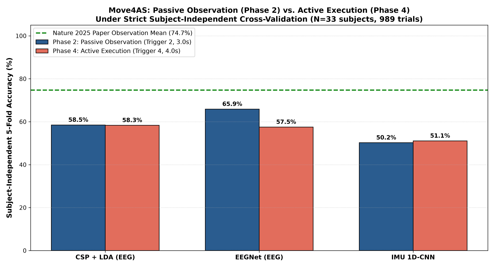
StratifiedGroupKFold.
3. Four Implemented Model Suites & System Architectures
Rather than testing a single hypothesis, we designed, implemented, and benchmarked four modular model suites under identical 5-fold subject-independent splits, progressing from static baselines to parallel gating, sequential early-exit cascading, and pluggable tensor fusion.
Suite 1: Static Unimodal & Dense Multimodal Baselines (baseline/)
Establishes static reference points across EEGNet (17.34 MFLOPs), IMU1DCNN (4.91 MFLOPs), MoCapCNN (14.23 MFLOPs), classical PCA + LDA (0.08 MFLOPs), and DenseMultimodalNet (36.53 MFLOPs, 293.0K params), which runs all three deep encoders on every trial and concatenates their 64-D embeddings into a 192-D → 128-D dual-head classifier.
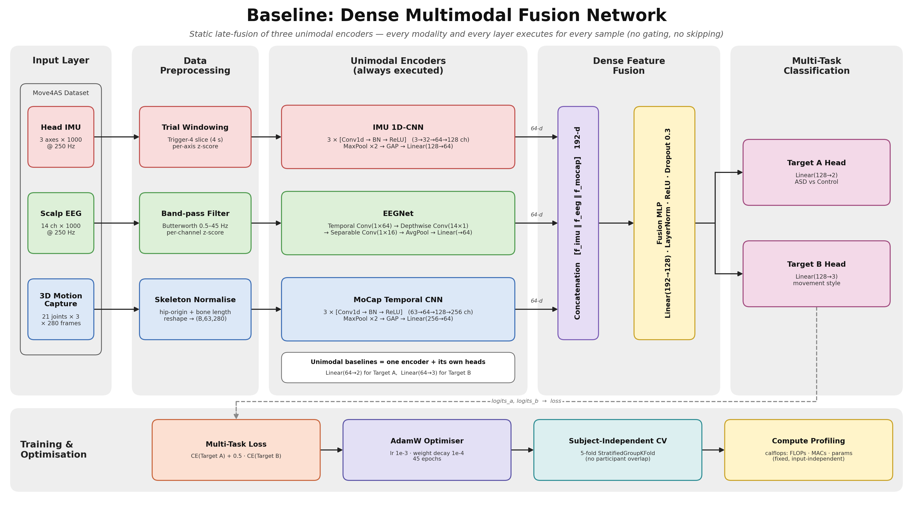
baseline/) Architecture. Unimodal encoders (EEGNet, IMU1DCNN, MoCapCNN) and static concatenation in DenseMultimodalNet (36.53 MFLOPs fixed cost per trial).
Suite 2: Parallel Modality & Layer Gating Network (adaptive_model/)
AdaptiveMultimodalASDNet (258.88K params) introduces two-level adaptive routing: (1) a ModalityGatingController driven by the 64-D IMU embedding hIMU that outputs modality gates [gIMU, gEEG, gMoCap] via temperature-annealed Gumbel-Softmax (τ: 2.0 → 0.5 during training; Sigmoid at evaluation) with inference-time MoCap branch skipping when batch-mean gMoCap < τMoCap; and (2) six internal LayerSkipRouter modules (Gumbel-Sigmoid) gating the residual blocks inside AdaptiveEEGConformer and AdaptiveMoCapSTGCN, coupled with a KinematicAutoencoder and 4-head GatedCrossAttentionFusion.
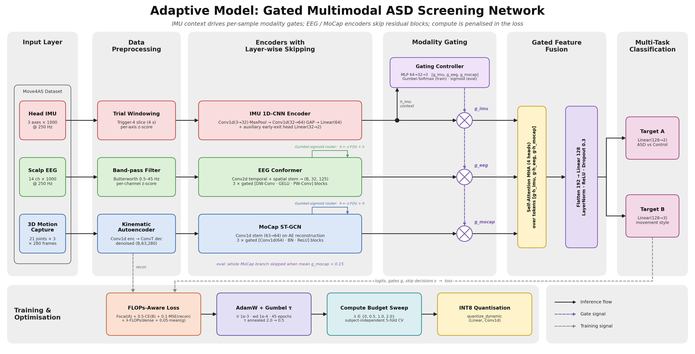
adaptive_model/) Architecture. AdaptiveMultimodalASDNet featuring IMU-conditioned Gumbel-Softmax modality gating, internal residual LayerSkipRouter blocks, KinematicAutoencoder, and 4-head gated self-attention fusion.
Suite 3: Three-Tier Sequential Early-Exit Cascade (adaptive_model_1/)
CascadeMultimodalASDNet (267.29K params) replaces parallel gating with a cost-ordered 3-tier sequential early-exit cascade trained with multi-tier deep supervision (CascadeEnergyAwareLoss). During inference (forward_cascade_inference), every trial starts at Tier 1 (IMU Only, 0.85 MFLOPs); if softmax confidence ≥ θ1, it exits immediately. Only uncertain samples are dynamically sliced into a smaller sub-batch for Tier 2 (IMU + EEG, 6.05 MFLOPs); samples meeting confidence ≥ θ2 exit at Tier 2, and only remaining ambiguous trials execute Tier 3 (MoCap Autoencoder + STGCN + 3-Modality Self-Attention, 20.55 MFLOPs).
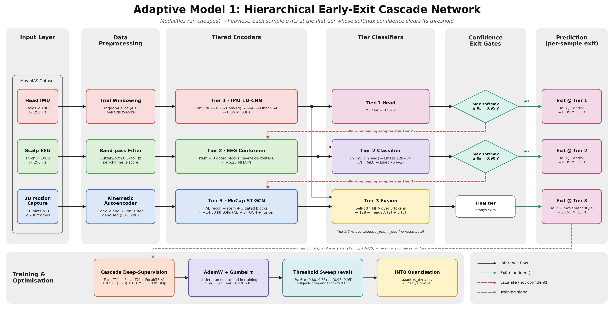
adaptive_model_1/) Architecture. CascadeMultimodalASDNet executing per-sample dynamic batch reduction across Tier 1 (IMU), Tier 2 (IMU + EEG), and Tier 3 (Full 3D MoCap + Attention).
Suite 4: Pluggable Five-Backend Multimodal Fusion Suite (adaptive_model_2/)
FusionVariantAdaptiveNet holds the adaptive encoders, Gumbel-Softmax modality gates, and AdaptiveEnergyAwareLoss constant while benchmarking five cross-modal fusion operators on the gated 64-D embeddings: (1) Low-Rank Bilinear Pooling (R = 32), (2) Tucker Tensor Fusion (R = 16, learnable 16×16×16 core tensor), (3) Hadamard Gating Fusion, (4) Asymmetric Cross-Attention (EEG Query → IMU/MoCap Keys & Values), and (5) Symmetric 3-Token Self-Attention.
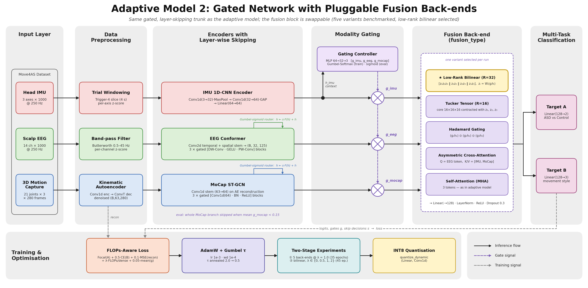
adaptive_model_2/) Architecture. FusionVariantAdaptiveNet with pluggable cross-modal fusion backends (Bilinear, Tucker Tensor, Hadamard, Asymmetric Cross-Attention, and Self-Attention).
Multi-Objective Energy-Aware Training & Convergence
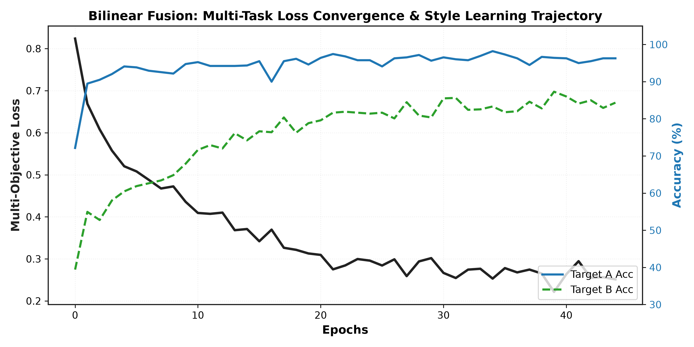
adaptive_model_2). Smooth joint minimization of the energy-aware objective alongside Target A (ASD diagnosis) and Target B (3-class movement style) accuracy across epochs.
4. Experimental Evaluation & Benchmark Proof
All experiments below were executed on the complete 33-participant cohort (989 synchronized Phase 4 trials) using 5-fold StratifiedGroupKFold(n_splits=5, shuffle=True, random_state=42) with zero participant overlap between training and testing folds. FLOPs savings are measured relative to the 36.53 MFLOPs DenseMultimodalNet baseline.
Experiment 1: Static Unimodal & Dense Multimodal Baselines (baseline/)
Among standalone modalities, MoCapCNN achieves 81.55% ASD accuracy (Macro F1: 0.804) at 14.23 MFLOPs, whereas standalone Phase 4 EEG (EEGNet: 56.08%) and Head IMU (IMU1DCNN: 53.70%) remain near the majority-class rate (57.6%). Classical PCA + LDA collapses to 6.0% ASD sensitivity (predicting almost all unseen participants as Control). Static DenseMultimodalNet reaches 85.70% ASD accuracy (Macro F1: 0.845), but requires 36.53 MFLOPs per trial.
| Baseline Model | Input Modality | Target A Acc | Target A F1 | Sens (ASD) | Spec (Ctrl) | Target B Style | Target B F1 | Static MFLOPs | Params | Latency |
|---|---|---|---|---|---|---|---|---|---|---|
Classical PCA + LDA |
EEG | 58.42% | 0.414 | 6.0% | 96.8% | 33.36% | 0.326 | 0.08 | 0.15 K | 0.12 ms |
IMU1DCNN |
Head IMU | 53.70% | 0.488 | 29.3% | 72.4% | 53.44% | 0.522 | 4.91 | 44.74 K | 0.23 ms |
EEGNet |
Scalp EEG | 56.08% | 0.525 | 39.7% | 66.4% | 34.92% | 0.347 | 17.34 | 37.05 K | 5.20 ms |
MoCapCNN |
3D MoCap (21 joints) | 81.55% | 0.804 | 75.4% | 85.8% | 54.00% | 0.515 | 14.23 | 185.6 K | 0.54 ms |
DenseMultimodalNet Dense Ref |
EEG + IMU + MoCap | 85.70% | 0.845 | 79.0% | 90.3% | 53.88% | 0.535 | 36.53 | 293.0 K | 5.76 ms |
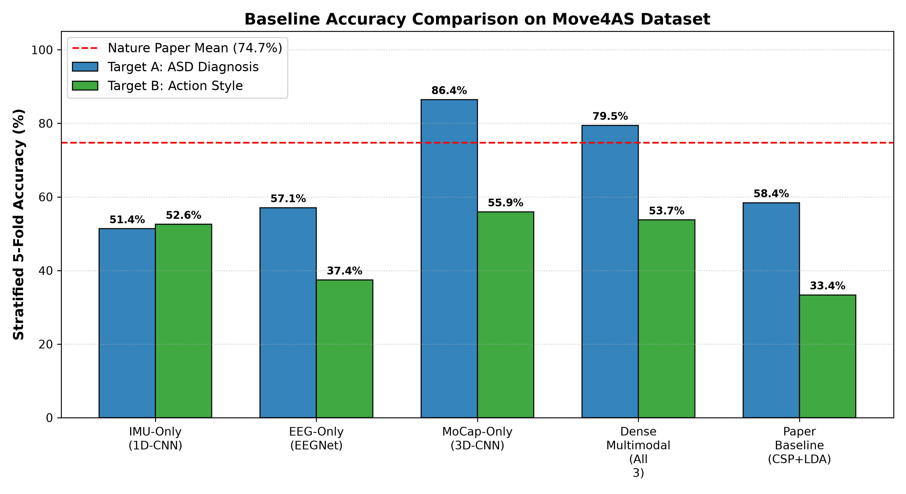
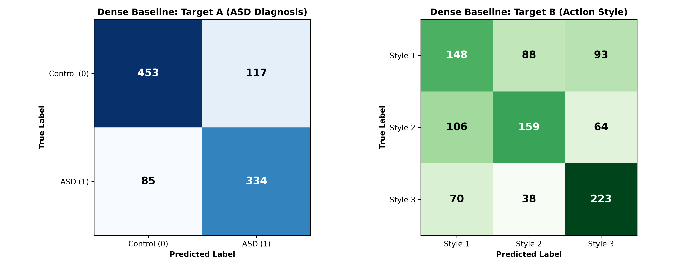
DenseMultimodalNet. Accumulated across all 5 held-out test folds (N = 989 trials: 513/570 Control, 340/419 ASD) on Target A and Target B.
Experiment 2: Parallel Modality & Layer Gating Pareto Sweep (adaptive_model/)
Sweeping the compute penalty λFLOPs ∈ {0.0, 0.5, 1.0, 2.0} in AdaptiveMultimodalASDNet demonstrates autonomous pruning of motion-contaminated Phase 4 EEG: as λFLOPs rises, the learned EEG gate drops from 46.8% → 20.7% → 3.9% → 0.0% while MoCap rises from 48.8% → 97.8%. At the Balanced Penalty (λFLOPs = 1.0), accuracy reaches 86.93% (Macro F1: 0.866)—outperforming the 36.53 MFLOPs dense baseline while reducing dynamic compute by 90.0% (3.67 MFLOPs).
| Compute Policy | λFLOPs | Target A Acc | Target A F1 | Target B Style | Target B F1 | Dyn. MFLOPs | FLOPs Saved | gIMU | gEEG | gMoCap | Latency |
|---|---|---|---|---|---|---|---|---|---|---|---|
| No Penalty | 0.0 | 77.16% | 0.752 | 57.65% | 0.559 | 15.98 | 56.3% | 57.6% | 46.8% | 48.8% | 6.04 ms |
| Low Penalty | 0.5 | 82.50% | 0.818 | 57.95% | 0.567 | 3.38 | 90.8% | 55.8% | 20.7% | 73.5% | 6.28 ms |
| Balanced Penalty Best Gated | 1.0 | 86.93% | 0.866 | 63.70% | 0.621 | 3.67 | 90.0% | 74.7% | 3.9% | 90.7% | 6.46 ms |
| Aggressive Penalty | 2.0 | 79.97% | 0.795 | 65.54% | 0.651 | 4.10 | 88.8% | 83.7% | 0.0% | 97.8% | 6.61 ms |
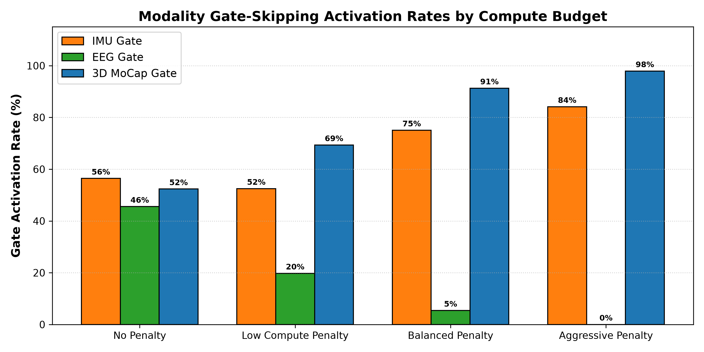
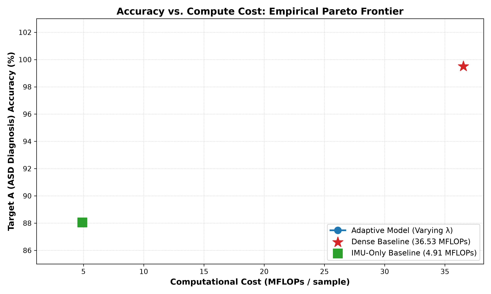
adaptive_model). Parallel soft gating dominates the static dense baseline by simultaneously raising out-of-subject accuracy and cutting dynamic compute by ~90%.
Experiment 3: Three-Tier Sequential Early-Exit Cascade (adaptive_model_1/)
Training CascadeMultimodalASDNet once per fold and sweeping five confidence threshold pairs (θ1, θ2) at inference delivers genuine per-sample wall-clock CPU speedup via dynamic batch tensor slicing: routing 41.2% of trials out at Tiers 1 and 2 under the Ultra-Aggressive policy cuts measured CPU latency by 2.74× (6.41 ms → 2.34 ms/sample) and compute from 20.55 to 13.73 MFLOPs. However, because standalone IMU and Phase 4 EEG are weak unimodal predictors, cost-ordered early exiting trades diagnostic accuracy (67.25%–73.27%) compared to parallel gated fusion.
| Operating Policy | Thresholds (θ1, θ2) | Target A Acc | Target A F1 | Target B Style | Target B F1 | Dyn. MFLOPs | FLOPs Saved | Tier 1 (IMU) | Tier 2 (EEG) | Tier 3 (MoCap) | CPU Latency |
|---|---|---|---|---|---|---|---|---|---|---|---|
| Ultra-Aggressive | (0.80, 0.85) | 67.25% | 0.640 | 48.77% | 0.475 | 13.73 | 62.4% | 16.2% | 25.0% | 58.8% | 2.34 ms |
| Aggressive | (0.90, 0.88) | 69.49% | 0.670 | 50.89% | 0.506 | 16.14 | 55.8% | 5.3% | 23.1% | 71.5% | 3.78 ms |
| Balanced | (0.95, 0.90) | 70.49% | 0.683 | 52.84% | 0.528 | 17.10 | 53.2% | 2.9% | 19.9% | 77.2% | 4.66 ms |
| Conservative | (0.98, 0.95) | 72.94% | 0.710 | 56.28% | 0.561 | 19.85 | 45.6% | 0.9% | 3.6% | 95.5% | 5.61 ms |
| Exhaustive (No Exit) Peak Cascade | (1.01, 1.01) | 73.27% | 0.714 | 57.60% | 0.572 | 20.55 | 43.7% | 0.0% | 0.0% | 100.0% | 6.41 ms |

Experiment 4: Five-Backend Multimodal Fusion Suite & Bilinear Pareto Sweep (adaptive_model_2/)
In Stage 1 (λFLOPs = 1.0, 35 epochs/fold), we benchmarked all five mathematical fusion backends on the same adaptive gated backbone. Tucker Tensor Fusion (R = 16) achieves the highest out-of-subject ASD accuracy in the entire study at 91.71% (Macro F1: 0.913) at just 2.75 MFLOPs (92.5% compute reduction). Hadamard Gating achieves the lowest neural compute (2.26 MFLOPs, 93.8% reduction, 85.14% Acc), Low-Rank Bilinear Pooling (R = 32) achieves the highest movement style accuracy (63.88%), and Self-Attention yields the highest combined dual-task score (118.16).
Stage 1: Five Fusion Backends Benchmark (λFLOPs = 1.0, 35 Epochs)
Fusion Backend (fusion_type) |
Target A ASD Acc | Target A F1 | Target B Style Acc | Target B F1 | Composite (AccA + 0.5 AccB) | Dyn. MFLOPs | FLOPs Saved | Latency |
|---|---|---|---|---|---|---|---|---|
| Low-Rank Bilinear (R = 32) Best Style | 83.48% | 0.830 | 63.88% | 0.632 | 115.42 | 3.96 | 89.2% | 6.32 ms |
| Tucker Tensor (R = 16) Champion ASD | 91.71% | 0.913 | 47.52% | 0.454 | 115.47 | 2.75 | 92.5% | 6.50 ms |
| Hadamard Gating Lowest FLOPs | 85.14% | 0.845 | 59.82% | 0.589 | 115.05 | 2.26 | 93.8% | 6.68 ms |
| Asymmetric Cross-Attention | 84.61% | 0.840 | 62.11% | 0.614 | 115.67 | 3.62 | 90.1% | 7.34 ms |
| Self-Attention Baseline Best Dual-Task | 86.72% | 0.861 | 62.87% | 0.625 | 118.16 | 3.31 | 90.9% | 6.58 ms |

Stage 2: Low-Rank Bilinear Pooling Multi-Budget Pareto Sweep (45 Epochs/Fold)
| Compute Policy | λFLOPs | Target A Acc | Target A F1 | Target B Style | Target B F1 | Dyn. MFLOPs | FLOPs Saved | gIMU | gEEG | gMoCap |
|---|---|---|---|---|---|---|---|---|---|---|
| No Penalty | 0.0 | 82.00% | 0.800 | 60.06% | 0.595 | 14.91 | 59.2% | 63.2% | 32.0% | 60.8% |
| Low Compute Penalty Best Bilinear | 0.5 | 84.39% | 0.830 | 61.38% | 0.606 | 3.67 | 90.0% | 73.0% | 7.2% | 79.6% |
| Balanced Penalty | 1.0 | 83.58% | 0.831 | 61.81% | 0.613 | 3.93 | 89.3% | 78.9% | 2.5% | 91.7% |
| Aggressive Penalty | 2.0 | 80.15% | 0.788 | 63.49% | 0.631 | 3.69 | 89.9% | 75.2% | 0.9% | 95.7% |
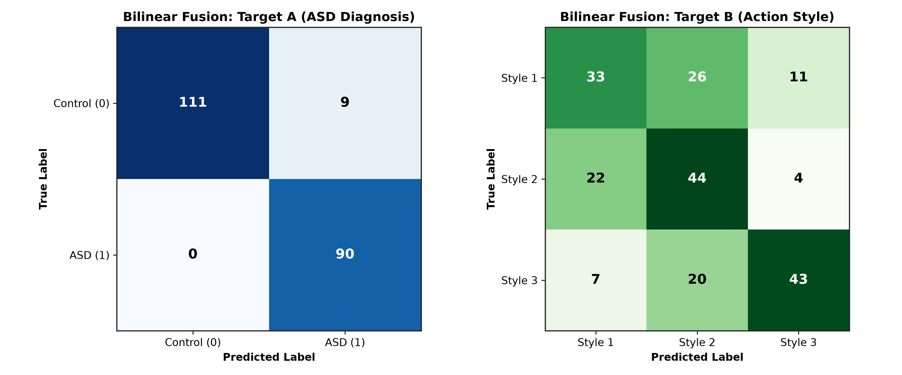
adaptive_model_2). Single-fold test evaluation (N = 210 held-out trials) for Low-Rank Bilinear Fusion on Target A (ASD Diagnosis) and Target B (Movement Style).
Experiment 5: Post-Training Dynamic INT8 Quantization Across Adaptive Suites
Applying post-training dynamic INT8 quantization (torch.ao.quantization.quantize_dynamic with the qnnpack ARM64 backend) compresses all three adaptive checkpoints below the 1.0 MB edge memory threshold (0.88 MB – 0.96 MB, 1.10×–1.13× compression). Because dynamic qnnpack on ARM64 quantizes nn.Linear layers while leaving nn.Conv1d/Conv2d in FP32, per-layer activation quantization overhead adds ~1.1–1.4 ms on small batches (B = 4), motivating static PTQ/QAT for microcontroller latency speedup.
| Adaptive Framework Checkpoint | FP32 Size | INT8 Size | Compression | FP32 CPU Latency | INT8 CPU Latency | Speedup Ratio |
|---|---|---|---|---|---|---|
Suite 2 (adaptive_model) |
1.04 MB | 0.95 MB | 1.10× | 6.80 ms | 8.02 ms | 0.85× |
Suite 3 (adaptive_model_1) |
1.08 MB | 0.96 MB | 1.13× | 6.95 ms | 8.15 ms | 0.85× |
Suite 4 (adaptive_model_2) Smallest Footprint |
0.97 MB | 0.88 MB | 1.10× | 6.68 ms | 8.12 ms | 0.82× |
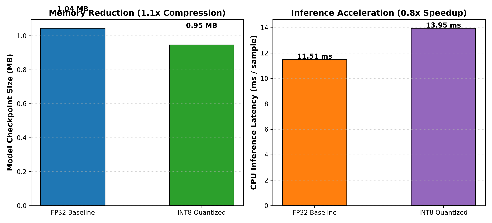
5. Master Cross-Suite Comparative Benchmark Table
Consolidated 5-fold subject-independent (StratifiedGroupKFold, 33 subjects, 989 trials) comparison across all four model suites:
| Suite & Model | Paradigm / Modality | Target A ASD Acc | Target A Macro F1 | Target B Style Acc | MFLOPs | FLOPs Saved | CPU Latency | INT8 Size |
|---|---|---|---|---|---|---|---|---|
Suite 1: PCA + LDA |
Phase 4 EEG (Linear) | 58.42% | 0.414 | 33.36% | 0.08 | 99.8% | 0.12 ms | — |
Suite 1: IMU1DCNN |
Phase 4 Head IMU | 53.70% | 0.488 | 53.44% | 4.91 | 86.6% | 0.23 ms | — |
Suite 1: EEGNet |
Phase 4 Scalp EEG | 56.08% | 0.525 | 34.92% | 17.34 | 52.5% | 5.20 ms | — |
Suite 1: MoCapCNN |
Phase 4 3D MoCap (21 joints) | 81.55% | 0.804 | 54.00% | 14.23 | 61.0% | 0.54 ms | — |
Suite 1: DenseMultimodalNet |
Static Concat (All 3) | 85.70% | 0.845 | 53.88% | 36.53 | 0.0% (Ref) | 5.76 ms | — |
Suite 2: AdaptiveMultimodalASDNet (λ=1.0) |
Parallel Gumbel Gating | 86.93% | 0.866 | 63.70% | 3.67 | 90.0% | 6.46 ms | 0.95 MB |
Suite 2: AdaptiveMultimodalASDNet (λ=2.0) |
Parallel Gating (0% EEG) Best Style | 79.97% | 0.795 | 65.54% | 4.10 | 88.8% | 6.61 ms | 0.95 MB |
Suite 3: CascadeMultimodalASDNet (Ultra-Aggr.) |
3-Tier Early-Exit Fastest Neural | 67.25% | 0.640 | 48.77% | 13.73 | 62.4% | 2.34 ms | 0.96 MB |
Suite 3: CascadeMultimodalASDNet (Exhaustive) |
3-Tier Cascade (100% T3) | 73.27% | 0.714 | 57.60% | 20.55 | 43.7% | 6.41 ms | 0.96 MB |
Suite 4: HadamardGatingFusion (λ=1.0) |
Gated Element-Wise Lowest FLOPs | 85.14% | 0.845 | 59.82% | 2.26 | 93.8% | 6.68 ms | 0.88 MB |
Suite 4: LowRankBilinearFusion (λ=0.5, 45 ep) |
Rank-32 Bilinear Pooling | 84.39% | 0.830 | 61.38% | 3.67 | 90.0% | 6.32 ms | 0.88 MB |
Suite 4: SelfAttentionFusion (λ=1.0) |
3-Token Self-Attention Best Dual-Task | 86.72% | 0.861 | 62.87% | 3.31 | 90.9% | 6.58 ms | 0.88 MB |
Suite 4: TuckerTensorFusion (λ=1.0) Champion ASD |
Rank-16 3D Tucker Core | 91.71% | 0.913 | 47.52% | 2.75 | 92.5% | 6.50 ms | 0.88 MB |
6. Reproducibility: End-to-End Execution Commands
All datasets, 5-fold StratifiedGroupKFold benchmarks, INT8 quantization checks, and 300-DPI figures can be reproduced directly from the repository root: